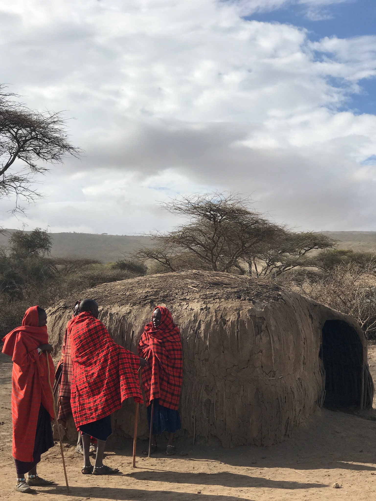
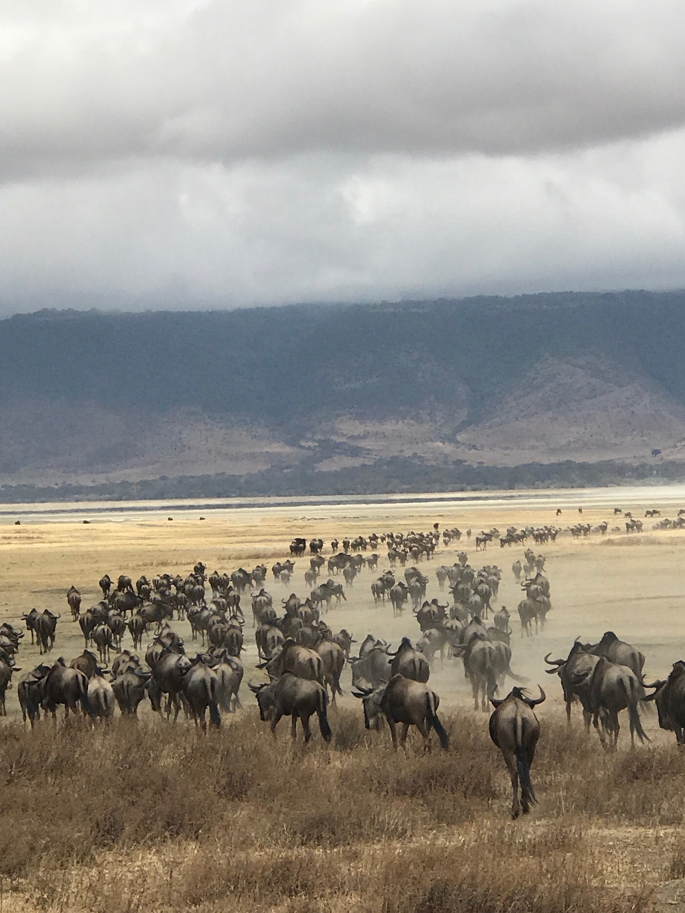
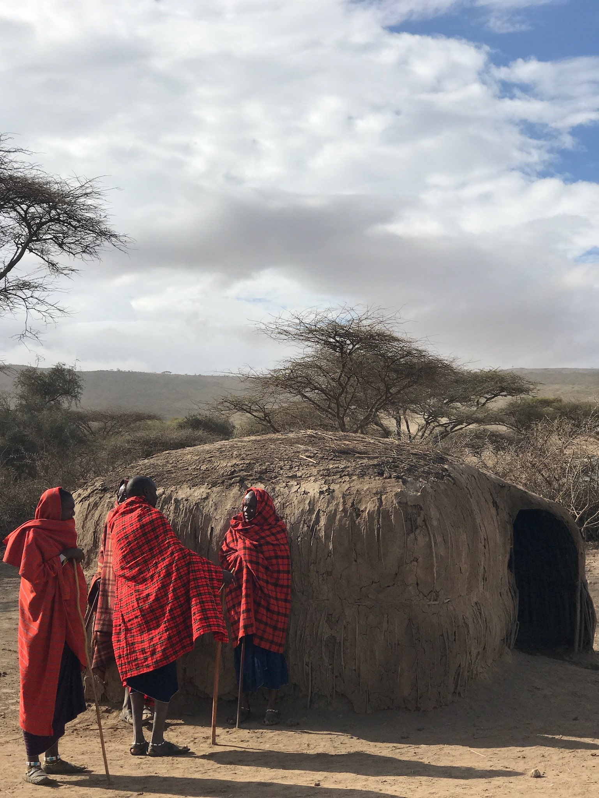
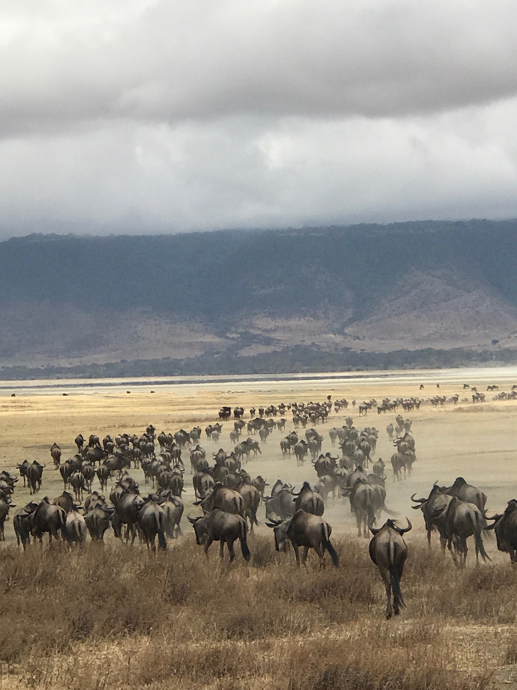

Introduction
Hi my name is Richard and i'm originally from the Netherlands, I am half Dutch and half Thai. I'm a student at Windesheim University in Zwolle and my major is Business IT. In my free time, i enjoy diving, chess and playing piano
I love to travel and speak different languages, I have lived in over 4 different countries, now 5 being of course Japan. One of my goals is to become a dive master and get my masters in business administration.
More about me
Which countries I've lived in
I was born in Rotterdam but I have never lived there before, due to my dad's profession we moved to Lagos, Nigera. After 3 years we moved to Kuala Lumper Malaysia where I learned english at a british school and a few years later we moved to Jakarta in Indonesia. Eventually we moved back to the Netherlands back in 2012.
What are my hobbies?
My biggest hobby is diving, I absolutely love diving and the feeling of being able to breathe underwater. Currently I am a certified Rescue Diver and plan on being a Master Diver next year. After that I might become a Dive Instructor in Thailand for a while.
Besides diving I love playing chess online and playing piano. I have been playing piano for over 10 years now and I have been playing chess for about 5 years now.
What am I currently working on?
Currently I am trying to make a social network for a exchange students community back in Europe called "Erasmus Student Network" or "ESN" in short. By creating such a network, I hope to make it easier for exchange students to find each other and make friends.

 



Dutch Culture
Skating
The Netherlands is renowned for its love of ice skating. In total we have won 469 olympic medals, 148 gold medals, 154 silver medals and 167 bronze medals in the Winter Olympics. It is not uncommon to see people of all ages skating on frozen lakes, canals, or specially constructed outdoor ice rinks. Many towns and cities also organize skating races and events, including the famous Elfstedentocht, a 200-kilometer long-distance skating tour.
Sinterklaas
Sinterklaas is a beloved Dutch holiday celebrated on December 5th (St. Nicholas' Eve). The tradition revolves around Sinterklaas, a legendary figure who is the basis for the modern-day Santa Claus. According to the tradition, Sinterklaas arrives in the Netherlands from Spain on a steamboat, accompanied by his helpers known as "Zwarte Pieten" (Black Petes). Children eagerly anticipate his arrival and leave their shoes by the fireplace or near the window, hoping to find small gifts and sweets left by Sinterklaas and his helpers. Sinterklaas is also known for his distinctive red bishop's attire and long white beard.
King's Day
Koningsdag (King's Day) is a national holiday in the Netherlands, celebrated on April 27th (or April 26th if the 27th falls on a Sunday). It marks the birthday of the reigning monarch of the Netherlands. Formerly known as Queen's Day, it changed to King's Day after the inauguration of King Willem-Alexander in 2013. On this day, the streets come alive with festivities, street markets (known as vrijmarkt), live music, parades, and various outdoor activities. People dress in orange, the national color, and there are often boat parades on the canals in major cities like Amsterdam.
Cycling culture
The Netherlands is renowned for its cycling culture. Fun fact: There are actually MORE bicycles then are people. Bicycles are a preferred mode of transportation, with well-maintained cycling paths crisscrossing the country. Dutch cities are designed to accommodate cyclists, making it one of the most bike-friendly nations in the world.
Thai Culture
Steet food
Thai street food is renowned worldwide for its vibrant flavors, affordability, and unique culinary experiences. From the famous Pad Thai to Tom Yum soup and Green Curry, Thai food offers a harmonious blend of sweet, sour, spicy, and savory tastes that tantalize the taste buds.
Floating Markets
Thailand's floating markets provide a unique and vibrant shopping experience. These markets, such as Damnoen Saduak and Amphawa, feature vendors selling fresh produce, local handicrafts, and delicious street food from boats along the canals, allowing visitors to immerse themselves in the lively atmosphere.
Temples and Buddhism
Thailand is home to thousands of breathtaking temples, known as "wats." These ornate and intricately designed structures serve as spiritual sanctuaries and cultural landmarks. The country's devotion to Theravada Buddhism is deeply rooted in its history and is evident in the numerous temples and the prominence of Buddhist practices.
Festivals and Traditions
Thailand celebrates numerous colorful festivals, such as Songkran (Thai New Year) and Loy Krathong (Festival of Lights). These events showcase Thai culture, traditions, and religious rituals, involving activities like water fights, floating lanterns, and vibrant parades.